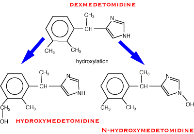

Phase 1
oxidative reactions (hydroxylation, dealkylation, deamination)
reductive reactions (rare)
hydrolytic reactions
These reactions generally produce a more reactive molecule which can then conjugate with a polar molecule in phase 2. Occasionally these reactive intermediates are toxic (eg, paracetamol).
Most phase 1 reactions take place in hepatocytes (so lipid soluble drugs have better access) catalysed by enzymes attached to the smooth endoplastic reticulum (microsomal enzymes). The most important of these is the cytochrome P450 system of enzymes (mixed function oxidase system). Cytochrome P450 enzymes (CYP) usually carry out the first step of phase 1 which is then finished off by other enzymes. At least 50 different CYPs have been cloned in people and this work is starting to be carried out in dogs. They are grouped into different families depending on their homology, ie, CYP1, CYP2 etc. These are further divided into CYP2A, CYP2B etc, and then into CYP2A1, CYP2A2 etc. CYP3A4 and CYP2D6 are commonest in people. They are reasonably non-specific in what they will metabolise, but there are exceptions to this.
For many drugs in people, the specific enzyme in the P450 family which metabolises that drug is known. This can be useful to know if you also know that the person is deficient in that enzyme, which is fairly common. This also happens in dogs (and probably other species). For instance, celecoxib, an aspirin type drug, is metabolised in dogs by CYP2D15 (thought to correspond to CYP2D6 in people). However, only 45% of dogs possess this enzyme and they metabolise celecoxib much faster than the rest.
Cytochrome P450s are also present in the intestinal mucosa, and can metabolise some drugs before they reach the systemic circulation.

Hydroxylation of medetomidine (an oxidative reaction).
Reduction of warfarin.
Hydrolysis of lignocaine.
The rate at which metabolism proceeds can be altered by drugs. Some drugs, such as phenobarbitone, cause a greatly increased synthesis of cytochrome P450 and glucuronyl transferase which means that the phenobarbitone (and other drugs) will be metabolised much more quickly (up to five times faster). This process is known as induction. It is of great clinical importance: many dogs are given phenobarbitone chronically for epilepsy, if they are then given some other drug the duration of action of the other drug may be much shorter than expected. Brassicas (rape, kale etc) also contain compounds which induce P450 enzymes. Grapefruit juice is a potent inhibitor of CYP3A enzymes in people, but it is not often drunk by animals! Ketoconazole, usually used as an antifungal drug, also inhibits CYP3A4, and is sometimes used to prolong the effects of expensive drugs in dogs. Macrolide antibiotics such as erythromycin and clarithromycin also inhibit CYP3A4 in people. Fluoxetine (an antidepressant) inhibits CYP2D6.
The rate of drug metabolism is also altered by changes in liver blood flow. These can occur in heart disease or shock, or can be caused by drugs.
Some drugs are metabolised so rapidly by the liver that they cannot be given orally. They are taken up by the portal system and most or all of the drug is metabolised by one passage through the liver so that very little or no drug appears in the systemic circulation. This is known as first pass metabolism. It is important for drugs like lignocaine (all removed) and morphine (about 80% removed).
Although most drug metabolism takes place in the liver, other organs (eg, skin, kidneys) are clinically important for some drugs. Intestinal lining cells may also be important in first pass metabolism.